Matilda in the prototype Max style
Matilda redrawn in the same style as the prototype Max (prototype_art/max_s1): the same style text, NAG off and no negative prompt, but with the palette line listing colours only (no 'houses'). She has the wide balaca wayuu from option (c), soft eyelashes and her striped ruana. Each option is shown beside the current prototype Matilda and the good Max. Tap an image to see it full size. A teal border marks the best try.
Contact sheet: best of each option on one image

A Standing, neutral pose (like Max's main image)
6 seeds, all kept: same flat, crisp shapes as Max, and no background houses.
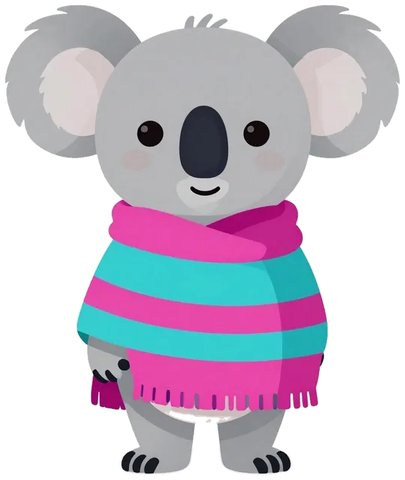

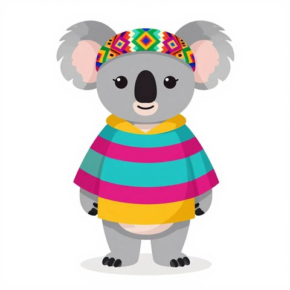

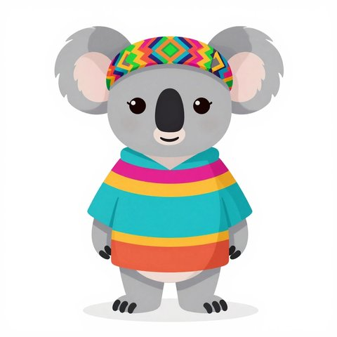

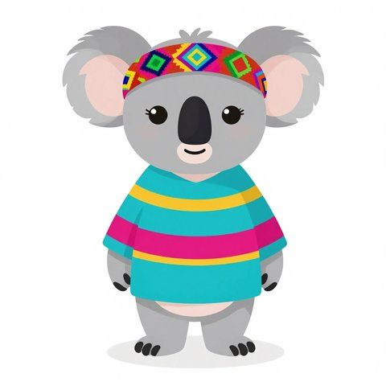

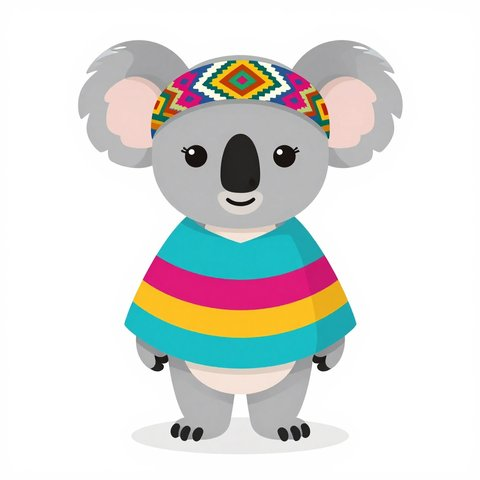

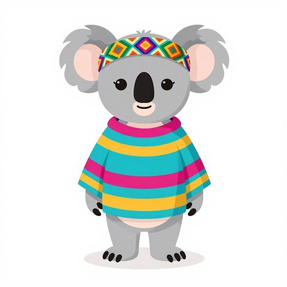

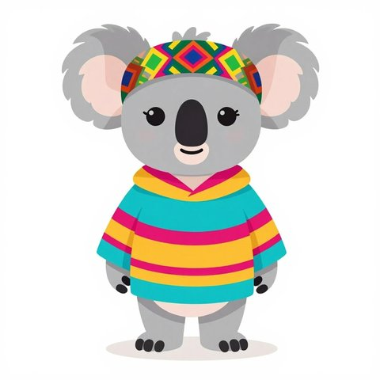
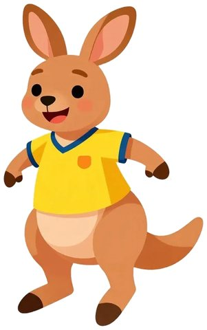
Try 4 has the biggest head, the clearest Wayuu pattern and the cutest face. Try 1 comes next and is the brightest. Try 2's ruana has an orange bottom stripe instead of mustard, and try 5's head is a bit small.
B Waving hello
6 seeds; tries 5 and 6 didn't wave, so they were dropped.

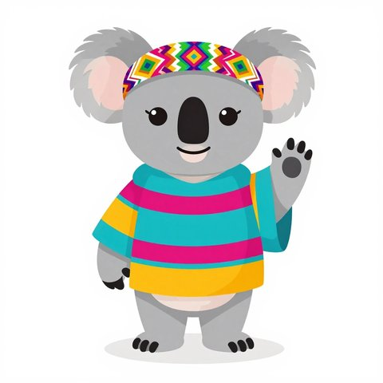

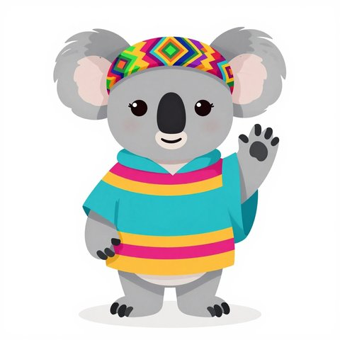

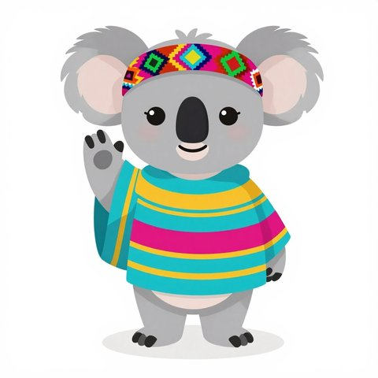

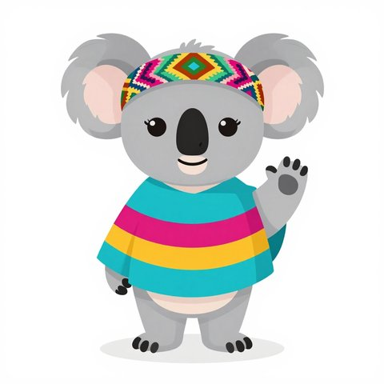
Try 1 and try 4 have a clear paw wave and a friendly face. Try 3 waves with the other paw, which works if she needs to face the other way.
Dropped
matilda_wave_s5: not waving (standing pose)matilda_wave_s6: not waving; ruana collar orange and green